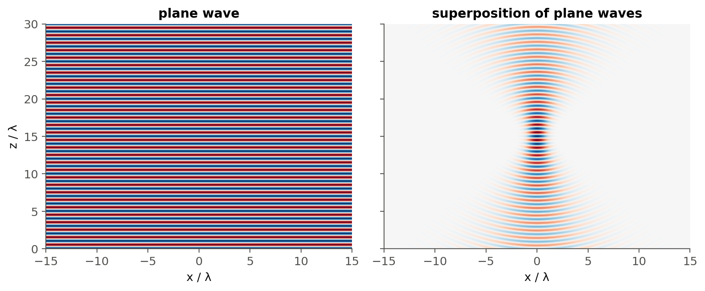

1 Electromagnetic waves
 Run this chapter’s code in Google Colab (no installation).
Run this chapter’s code in Google Colab (no installation).
Slides 11–24: Maxwell’s equations, the spectrum, plane waves, phase velocity, phase change, exponential notation, wave vector, spherical waves, divergence.
1.1 Key relations
Light is a travelling electromagnetic wave whose electric and magnetic fields are perpendicular to each other and to the direction of propagation (slide 13). The simplest solution of Maxwell’s wave equation is the monochromatic plane wave (slides 14–15):
\[ E_x(z,t)=E_0\cos(\omega t-kz+\phi_0),\qquad k=\frac{2\pi}{\lambda},\quad \omega=2\pi\nu,\quad v=\frac{\omega}{k}=\nu\lambda,\quad \Delta\phi=k\,\Delta z . \]
- A wavefront is a surface of constant phase. For a plane wave it is a plane perpendicular to \(\mathbf k\) (slides 16–17).
- The constant-phase condition \(\omega t-kz=\) const moves at the phase velocity \(v=\omega/k\) (slide 18).
- In exponential notation, \(E_x=\mathrm{Re}\{E_c\,e^{j(\omega t-kz)}\}\) with \(E_c=E_0e^{j\phi_0}\) (slide 20).
- Along an arbitrary direction, \(E(\mathbf r,t)=E_0\cos(\omega t-\mathbf k\cdot\mathbf r+\phi_0)\) (slides 21–22).
- A spherical wave has amplitude \(\propto 1/r\) (slide 23), so its irradiance falls as \(1/r^2\) (Chapter 3).
1.1.1 A travelling wave, live
The red dot rides on a crest, so it moves at the phase velocity \(v=c/n\). In a medium of index \(n\) the wavelength shrinks to \(\lambda/n\) while the frequency stays the same (slides 42–43).
1.2 Worked example: where “optical frequencies” sit in telecom
The slides define optical frequencies as roughly \(10^{12}\)–\(10^{16}\) Hz (slide 40). In practice, the 5G network of slide 9 lives in the ITU-T fiber bands. The table converts band edges into frequency and photon energy.
Show the Python
bands = {"O": (1260, 1360), "E": (1360, 1460), "S": (1460, 1530),
"C": (1530, 1565), "L": (1565, 1625), "U": (1625, 1675)}
rows = [{"band": b, "λ (nm)": f"{l1}–{l2}",
"ν (THz)": f"{c0/nm(l2)/1e12:.1f}–{c0/nm(l1)/1e12:.1f}",
"photon energy (eV)": f"{ol.photon_energy_eV(nm(l2)):.3f}–{ol.photon_energy_eV(nm(l1)):.3f}"}
for b, (l1, l2) in bands.items()]
pd.DataFrame(rows).set_index("band")| λ (nm) | ν (THz) | photon energy (eV) | |
|---|---|---|---|
| band | |||
| O | 1260–1360 | 220.4–237.9 | 0.912–0.984 |
| E | 1360–1460 | 205.3–220.4 | 0.849–0.912 |
| S | 1460–1530 | 195.9–205.3 | 0.810–0.849 |
| C | 1530–1565 | 191.6–195.9 | 0.792–0.810 |
| L | 1565–1625 | 184.5–191.6 | 0.763–0.792 |
| U | 1625–1675 | 179.0–184.5 | 0.740–0.763 |
Show the Python
# DWDM grid: channel spacing in frequency -> spacing in wavelength at 1550 nm
for dnu in (100e9, 50e9, 12.5e9):
print(f"Δν = {dnu/1e9:5.1f} GHz -> Δλ = λ²Δν/c = {ol.dlam_from_dnu(dnu, nm(1550))*1e9:.3f} nm")Δν = 100.0 GHz -> Δλ = λ²Δν/c = 0.801 nm
Δν = 50.0 GHz -> Δλ = λ²Δν/c = 0.401 nm
Δν = 12.5 GHz -> Δλ = λ²Δν/c = 0.100 nm1.3 Worked example: phase is what we engineer in integrated photonics
The phase difference \(\Delta\phi=k\,\Delta z\) (slide 19) is the quantity that every phase shifter, interferometric modulator or optical switch manipulates. In a silicon waveguide with a thermo-optic coefficient \(dn/dT\approx1.8\times10^{-4}\) K⁻¹ (typical value for Si near 1550 nm), a heater of length \(L\) produces \(\Delta\phi=(2\pi/\lambda)(dn/dT)\,\Delta T\,L\).
Show the Python
dndT = 1.8e-4 # K^-1, typical Si value (bulk value, confinement ≈ 1)
for L in (um(50), um(100), um(500)):
print(f"L = {L*1e6:5.0f} µm -> ΔT for a π shift = {nm(1550)/(2*dndT*L):5.1f} K")L = 50 µm -> ΔT for a π shift = 86.1 K
L = 100 µm -> ΔT for a π shift = 43.1 K
L = 500 µm -> ΔT for a π shift = 8.6 KThe same calculation, with an electro-optic or plasma-dispersion \(\Delta n\) instead of the thermo-optic one, is the core of Chapter 6 (light modulation).
1.4 Plane waves build every beam (slides 22–24)
A plane wave is unphysical (infinite extent), but because the wave equation is linear, any field can be written as a superposition of plane waves. Summing plane waves with a spread of transverse wave vectors \(k_x\) produces a localised, focused beam. The angular spread of the wave vectors is the divergence (slide 24).
Show the Python
lam = 1.0; k = 2*np.pi/lam
x = np.linspace(-15, 15, 400); z = np.linspace(0, 30, 400)
X, Z = np.meshgrid(x, z)
single = np.cos(k*Z)
kx = np.linspace(-0.8*k, 0.8*k, 81)
wts = np.exp(-(kx/(0.35*k))**2)
beam = sum(w*np.cos(kxi*X + np.sqrt(k**2 - kxi**2)*(Z - 15)) for w, kxi in zip(wts, kx))
fig, ax = plt.subplots(1, 2, figsize=(9, 3.8), sharey=True)
for a, f, t in zip(ax, (single, beam), ("plane wave", "superposition of plane waves")):
a.imshow(f, extent=[x[0], x[-1], z[0], z[-1]], origin="lower", cmap="RdBu", aspect="auto")
a.set_title(t); a.set_xlabel("x / λ"); a.grid(False)
ax[0].set_ylabel("z / λ"); plt.tight_layout(); plt.show()
TipGoing deeper
- Derive \(\nabla^2\mathbf E=\mu\varepsilon\,\partial_t^2\mathbf E\) from the curl equations, and identify where the assumptions “no free charge”, “linear”, “isotropic” and “homogeneous” enter. Which assumption fails first in a waveguide? (Answer in Chapter 2.)
- Show that for a plane wave \(|\mathbf B|=|\mathbf E|/v\), and estimate the ratio of magnetic to electric force on a bound electron. This justifies why “optical field” means \(\mathbf E\) (slide 16).
- The superposition above is the angular spectrum representation. It reappears as the Fraunhofer–Fourier link in Chapter 13 and as the modal expansion in waveguides.
- Why does the spherical-wave amplitude decay as \(1/r\) (slide 23)? Relate it to energy conservation through spheres of increasing radius (Chapter 3).
- Scalar versus vector optics: when does treating \(E_x\) as a scalar fail? (High-NA focusing, sub-wavelength waveguides.)
NoteComplements
- S. O. Kasap, Optoelectronics and Photonics: Principles and Practices, 2nd ed., Pearson. Chapter 1 is the source of most slide figures.
- B. E. A. Saleh, M. C. Teich, Fundamentals of Photonics: chapters “Wave Optics” and “Electromagnetic Optics”.
- E. Hecht, Optics: chapters on wave motion and electromagnetic theory; very visual.
- ITU-T Recommendation G.694.1 (DWDM frequency grid), the frequency anchor used by every WDM system.
1.5 Try it yourself
- Write the field of slide 22 for \(\mathbf k\) in the \(xz\)-plane at 30° from \(z\). Plot its wavefronts.
- A 5G fronthaul link (slide 9) uses 25 Gb/s per wavelength on a 100 GHz grid. How many channels fit in the C-band?
- Two waves of the same frequency travel through 1 mm of glass (\(n=1.5\)) and 1 mm of air. What is their phase difference at 633 nm? How many wavelengths does that represent?